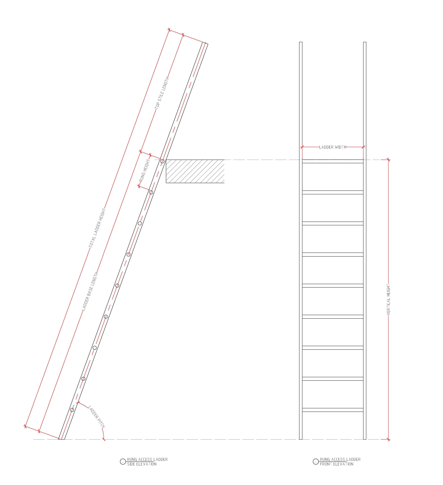

This calculator provides a quick ladder size calculation in accordance to Australian Standard. Results given is for basic guidance only. This site is not liable for any losses, damages or
compliance issues that inccured in connection with its tools. Seeking professional advises and certification from certified height safety supplier is highly recommended.
A twin-stile rung ladder comprises of two stiles and rungs that assists user ascending/descending between levels. It is to be inclined between 70° and 90°, and can be both portable or
permanently fixed to a structure. The Australia Standard AS1657 sets out requirements for the design, selection, construction and installation of ladder and is to be strictly followed for
compliances. Please contact certified supplier/installer or refer to Australian Standard AS1657 for more information.
- Vertical Height - Vertical measurement between levels (300mm - 6000mm)
- Ladder Width - Desired width of the ladder measuring between stiles (375mm - 525mm)
- Ladder Pitch - Desired slope of the ladder (70° - 90°)
A step ladder is similar to rung ladder where it comprises of two stiles and flat steps that assists user ascending/descending between levels, contra to round rungs. It is to be inclined
between 60° and 70°, and can only be permanently fixed to a structure. The Australia Standard AS1657 sets out requirements for the design, selection, construction and installation of
ladder and is to be strictly followed for compliances. Please contact certified supplier/installer or refer to Australian Standard AS1657 for more information.
- Vertical Height - Vertical measurement between levels (300mm - 6000mm)
- Ladder Width - Desired width of the ladder measuring between stiles (450mm - 750mm)
- Ladder Pitch - Desired slope of the ladder (60° - 70°)
- Handrail Clearance - Width measuring between handrails (550mm - 750mm)
A stair, stairway or staircase is a permanent structure designed to connect large vertical distance between level, by dividing it into steps with equal limited vertical distances. A stair
is considered safer and provides safer access comparing to rung and step ladder, but it also requires larger area due to its structure. It has a slope between 20° to 45° with a preferred
range within 30° to 38°*, as well as additional requirements listed below. The Australia Standard AS1657 sets out requirements for the design, selection, construction and
installation of stair and is to be strictly followed for compliances. Please contact certified supplier/installer or refer to Australian Standard AS1657 for more information.
- Vertical Height - Vertical measurement between levels (300mm - 4000mm)
- Stair Width - Desired width of the stair measuring between stiles (min 600mm)
- Stair Slope - Desired slope of the stair (30° - 38°)*
